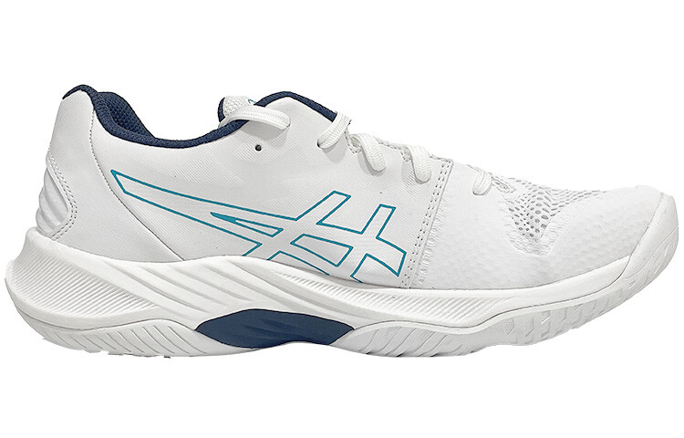

профессиональные волейбольные кроссовки с максимальной амортизацией для мощных прыжков. Технологии FlyteFoam и Gel обеспечивают мягкое приземление и возврат энергии, а дышащий верх сохраняет комфорт на протяжении всей игры.
Asics Sky Elite FF — это инновационные волейбольные кроссовки, разработанные специально для профессиональных спортсменов. Уникальная комбинация технологий FlyteFoam и Gel обеспечивает непревзойденную амортизацию и энергоэффективность при каждом прыжке. Система Twistruss гарантирует стабильность при резких поворотах и смене направления движения. Дышащий верх из сетки и синтетической замши обеспечивает оптимальную вентиляцию и комфорт на протяжении всей игры. Анатомическая колодка поддерживает стопу в правильном положении, снижая риск травм. Идеальный выбор для игроков высокого уровня, ценящих качество и надежность.